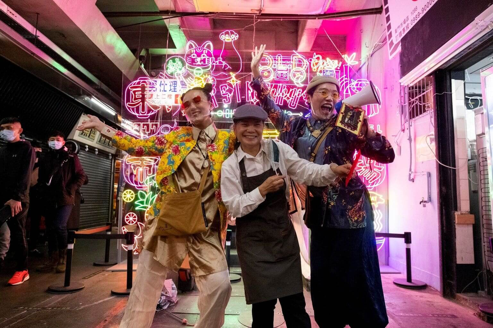
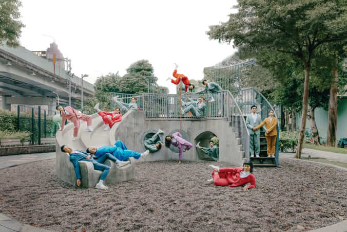

26新緣結一
遊走式演出
捷運通廊出口腹地（新北市美術館園區端）至活力草地
7/8(六) 15:00-15:30、17:00-17:30
7/9(日) 15:00-15:30、17:00-17:30
7/9(日) 15:00-15:30、17:00-17:30
一種似新而舊的緣分，正在新生地上悄悄發生，是交流的起點，更是一段融容的旅程。發想自臺灣廟宇的求籤文化，演出運用肢體語言演繹籤詩，期望與現場觀眾互動結緣，共同譜出一段「解憂之舞」，經驗舞蹈語彙所帶來的解籤時光。

小事製作
成立於 2014 年，小事製作透過參與式藝術實踐，持續在非典型文化展演空間中，進行當代藝文體驗教育的再造與價值創造，與公民社會一起打造更永續的藝術支持網絡。演出作品曾參與愛丁堡藝穗節、臺灣國際藝術節（TIFA）等國內外重要藝術節慶。
創作者／張雅為
協同創作／張雅媛
表演者／張雅為、張雅媛、黃裕閔、初培榕
小事製作為 112 年臺北市年度演藝團隊